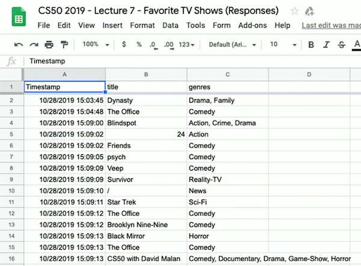
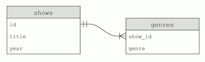
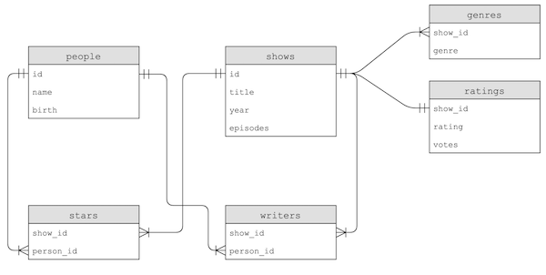

讲座 7
Spreadsheets
- Most of us are familiar with spreadsheets, rows of data, with each column in a row having a different piece of data that relate to each other somehow.
- A database is an application that can store data, and we can think of Google Sheets as one such application.
- For 示例, we created a Google Form to ask students their favorite TV show and genre of it. We look thorugh the responses, and see that the spreadsheet has three columns: “Timestamp”, “title”, and “genres”:

- We can 下载 a CSV file from the spreadsheet with “File > 下载”, upload it to our IDE, and see that it’s a text file with comma-separated values matching the spreadsheet’s data.
- We’ll write
favorites.py:import csv with open("CS50 2019 - Lecture 7 - Favorite TV Shows (Responses) - Form Responses 1.csv", "r") as file: reader = csv.DictReader(file) for row in reader: print(row["title"])- We’re just going to 打开 the file and make sure we can get the title of each row.
- Now we can use a dictionary to count the number of times we’ve seen each title, with the keys being the titles and the values for each key an integer, tracking how many times we’ve seen that title:
import csv counts = {} with open("CS50 2019 - Lecture 7 - Favorite TV Shows (Responses) - Form Responses 1.csv", "r") as file: reader = csv.DictReader(file) for row in reader: title = row["title"] if title in counts: counts[title] += 1 else: counts[title] = 1 for title, count in counts.items(): print(title, count, sep=" | ")- In each row, we can get the
titlewithrow["title"]. - Here, if we’ve seen the title before (it’s in
counts), we can just add 1 to the value. Otherwise, we need to set the initial value to 1. - Finally, we can print out our dictionary’s keys and values with a separator so it’s a bit easier to 阅读.
- In each row, we can get the
- We can change the way we iterate to
for title, count in sorted(counts.items()):, and we’ll see our dictionary sorted by the keys, alphabetically. - But we can 排序 by the key-value pairs in the dictionary with:
def f(item): return item[1] for title, count in sorted(counts.items(), key=f, reverse=True):- We define a function,
f, which just returns the value from theitemin the dictionary withitem[1]. Thesortedfunction, in turn, can use that as the key to 排序 the dictionary’s items. And we’ll also pass inreverse=Trueto 排序 from largest to smallest, instead of smallest to largest.
- We define a function,
- We can actually define our function in the same line, with this syntax:
for title, count in sorted(counts.items(), key=lambda item: item[1], reverse=True):- We pass in a lambda, or anonymous function, as the key, which takes in the
itemand returnsitem[1].
- We pass in a lambda, or anonymous function, as the key, which takes in the
- Finally, we can make all the titles lowercase with
title = row["title"].lower(), so our counts can be a little 更多 accurate even if the names weren’t typed in the exact same way.
SQL
- We’ll look at a new program in our terminal window,
sqlite3, a command-line program that lets us use another language, SQL (pronounced like “sequel”). - We’ll run some commands to create a new database called
favorites.dband import our CSV file into a table called “favorites”:~/ $ sqlite3 favorites.db SQLite version 3.22.0 2018-01-22 18:45:57 Enter ".help" for usage hints. sqlite> .mode csv sqlite> .import "CS50 2019 - Lecture 7 - Favorite TV Shows (Responses) - Form Responses 1.csv" favorites - We see a
favorites.dbin our IDE after we run this, and now we can use SQL to interact with our data:sqlite> SELECT title FROM favorites; title Dynasty The Office Blindspot 24 Friends psych Veep Survivor ... - We can even 排序 our results:
sqlite> SELECT title FROM favorites ORDER BY title; title / 24 9009 Adventure Time Airplane Repo Always Sunny Ancient Aliens ... - And get a count of the number of times each title appears:
sqlite> SELECT title, COUNT(title) FROM favorites GROUP BY title; title | COUNT(title) / | 1 24 | 1 9009 | 1 Adventure Time | 1 Airplane Repo | 1 Always Sunny | 1 Ancient Aliens | 1 ... - We can even set the count of each title to a new variable,
n, and order our results by that, in descending order. Then we can see the top 10 results withLIMIT 10:sqlite> SELECT title, COUNT(title) AS n FROM favorites GROUP BY title ORDER BY n DESC LIMIT 10; title | n The Office | 30 Friends | 20 Game of Thrones | 20 Breaking Bad | 14 Black Mirror | 9 Rick and Morty | 9 Brooklyn Nine-Nine | 5 Game of thrones | 5 No | 5 Prison Break | 5 - SQL is a language that lets us work with a relational database, an application lets us store data and work with them 更多 quickly than with a CSV.
- With
.schema, we can see how the format for the table for our data is created:sqlite> .schema CREATE TABLE favorites( "Timestamp" TEXT, "title" TEXT, "genres" TEXT ); - It turns out that, when working with data, we only need four operations:
CREATEREADUPDATEDELETE
- In SQL, the commands to perform each of these operations are:
INSERTSELECTUPDATEDELETE
- First, we’ll need to insert a table with the
CREATE TABLE table (column type, ...);command. - SQL, too, has its own data types to optimize the amount of space used for storing data:
BLOB, for “binary large object”, raw binary data that might represent filesINTEGERsmallintintegerbigint
NUMERICbooleandatedatetimenumeric(scale,precision), which solves floating-point imprecision by using as many bits as needed, for each digit before and after the decimal pointtimetimestamp
REALreal, for floating-point valuesdouble precision, with 更多 bits
TEXTchar(n), for an exact number of charactersvarchar(n), for a variable number of characters, up to a certain limittext
- SQLite is one database application that supports SQL, and there are many companies with server applications that support SQL, includes Oracle Database, MySQL, PostgreSQL, MariaDB, and Microsoft Access.
- After inserting values, we can use functions to perform calculations, too:
AVGCOUNTDISTINCT, for getting distinct values without duplicatesMAXMIN- …
- There are also other operations we can combine as needed:
WHERE, matching on some strict conditionLIKE, matching on substrings for textLIMITGROUP BYORDER BYJOIN, combining data from multiple tables
- We can update data with
UPDATE table SET column=value WHERE condition;, which could include 0, 1, or 更多 rows depending on our condition. For 示例, we might sayUPDATE favorites SET title = "The Office" WHERE title LIKE "%office", and that will set all the rows with the title containing “office” to be “The Office” so we can make them consistent. - And we can remove matching rows with
DELETE FROM table WHERE condition;, as inDELETE FROM favorites WHERE title = "Friends";. - We can even delete an entire table altogether with another command,
DROP.
IMDb
- IMDb, or “互联网 Movie Database”, has datasets available to 下载 as TSV, or tab-separate values, files.
- For 示例, we can 下载
title.basics.tsv.gz, which will contain basic data 关于 titles:tconst, a unique identifier for each title, likett4786824titleType, the type of the title, liketvSeriesprimaryTitle, the main title used, likeThe CrownstartYear, the year a title was released, like2016genres, a comma-separated list of genres, likeDrama,History
- We take a look at
title.basics.tsvafter we’ve unzipped it, and we see that the first rows are indeed the headers we expected and each row has values separated by tabs. But the file has 更多 than 6 million rows, so even searching for one value takes a moment. - We’ll 下载 the file into our IDE with
wget, and thengunzipto unzip it. But our IDE doesn’t have enough space, so we’ll use our Mac’s terminal instead. - We’ll write
import.pyto 阅读 the file in:import csv # Open TSV file for reading with open("title.basics.tsv", "r") as titles: # Since the file is a TSV file, we can use the CSV reader and change # the separator to a tab. reader = csv.DictReader(titles, delimiter="\t") # Open new CSV file for writing with open("shows0.csv", "w") as shows: # Create writer writer = csv.writer(shows) # Write header of the columns we want writer.writerow(["tconst", "primaryTitle", "startYear", "genres"]) # Iterate over TSV file for row in reader: # If non-adult TV show if row["titleType"] == "tvSeries" and row["isAdult"] == "0": # Write row writer.writerow([row["tconst"], row["primaryTitle"], row["startYear"], row["genres"]]) - Now, we can 打开
shows0.csvand see a smaller set of data. But it turns out, for some of the rows,startYearhas a value of\N, and that’s a special value from IMDb when they want to represent values that are missing. So we can 滤镜 out those values and convert thestartYearto an integer to 滤镜 for shows after 1970:... # If year not missing (We need to escape the backslash too) if row["startYear"] != "\\N": # If since 1970 if int(row["startYear"]) >= 1970: # Write row writer.writerow([row["tconst"], row["primaryTitle"], row["startYear"], row["genres"]]) - We can write a program to 搜索 for a particular title:
import csv # Prompt user for title title = input("Title: ") # Open CSV file with open("shows2.csv", "r") as input: # Create DictReader reader = csv.DictReader(input) # Iterate over CSV file for row in reader: # Search for title if title.lower() == row["primaryTitle"].lower(): print(row["primaryTitle"], row["startYear"], row["genres"], sep=" | ")- We can run this program and see our results, but we can see how SQL can do a better job.
- In Python, we can connect to a SQL database and 阅读 our file into it once, so we can make lots of queries without writing new programs and without having to 阅读 the entire file each 时间.
- Let’s do this 更多 easily with the CS50 library:
import cs50 import csv # Create database by opening and closing an empty file first open(f"shows3.db", "w").close() db = cs50.SQL("sqlite:///shows3.db") # Create table called `shows`, and specify the columns we want, # all of which will be text except `startYear` db.execute("CREATE TABLE shows (tconst TEXT, primaryTitle TEXT, startYear NUMERIC, genres TEXT)") # Open TSV file # https://datasets.imdbws.com/title.basics.tsv.gz with open("title.basics.tsv", "r") as titles: # Create DictReader reader = csv.DictReader(titles, delimiter="\t") # Iterate over TSV file for row in reader: # If non-adult TV show if row["titleType"] == "tvSeries" and row["isAdult"] == "0": # If year not missing if row["startYear"] != "\\N": # If since 1970 startYear = int(row["startYear"]) if startYear >= 1970: # Insert show by substituting values into each ? placeholder db.execute("INSERT INTO shows (tconst, primaryTitle, startYear, genres) VALUES(?, ?, ?, ?)", row["tconst"], row["primaryTitle"], startYear, genres) - Now we can run
sqlite3 shows3.dband run commands like before, such asSELECT * FROM shows LIMIT 10;. - With
SELECT COUNT(*) FROM shows;we can see that there are 更多 than 150,000 shows in our table, and withSELECT COUNT(*) FROM shows WHERE startYear = 2019;, we see that there were 更多 than 6000 this year.
Multiple tables
- But each of the rows will only have one column for genres, and the values are multiple genres put together. So we can go 返回 to our import program, and add another table:
import cs50 import csv # Create database open(f"shows4.db", "w").close() db = cs50.SQL("sqlite:///shows4.db") # Create tables db.execute("CREATE TABLE shows (id INT, title TEXT, year NUMERIC, PRIMARY KEY(id))") # The `genres` table will have a column called `show_id` that references # the `shows` table above db.execute("CREATE TABLE genres (show_id INT, genre TEXT, FOREIGN KEY(show_id) REFERENCES shows(id))") # Open TSV file # https://datasets.imdbws.com/title.basics.tsv.gz with open("title.basics.tsv", "r") as titles: # Create DictReader reader = csv.DictReader(titles, delimiter="\t") # Iterate over TSV file for row in reader: # If non-adult TV show if row["titleType"] == "tvSeries" and row["isAdult"] == "0": # If year not missing if row["startYear"] != "\\N": # If since 1970 startYear = int(row["startYear"]) if startYear >= 1970: # Trim prefix from tconst id = int(row["tconst"][2:]) # Insert show db.execute("INSERT INTO shows (id, title, year) VALUES(?, ?, ?)", id, row["primaryTitle"], startYear) # Insert genres if row["genres"] != "\\N": for genre in row["genres"].split(","): db.execute("INSERT INTO genres (show_id, genre) VALUES(?, ?)", id, genre)- So now our
showstable no longer has agenrescolumn, but instead we have agenrestable with each row representing a show and an associated genre. Now, a particular show can have multiple genres we can 搜索 for, and we can get other data 关于 the show from theshowstable given its ID.
- So now our
- In fact, we can combine both tables with
SELECT * FROM shows WHERE id IN (SELECT show_id FROM genres WHERE genre = "Comedy") AND year = 2019;. We’re filtering ourshowstable by IDs where the ID in thegenrestable has a value of “Comedy” for thegenrecolumn, and has the value of 2019 for theyearcolumn. - Our tables look like this:

- Since the ID in the
genretable come from theshowstable, we call itshow_id. And the arrow indicates that a single show ID might have many matching rows in thegenrestable.
- Since the ID in the
- We see that some datasets from IMDb, like
title.principals.tsv, have only IDs for certain columns that we’ll have to look up in other tables. - By reading the descriptions for each table, we can see that all of the data can be used to construct these tables:

- Notice that, for 示例, a person’s 姓名 could also be copied to the
starsorwriterstables, but instead only theperson_idis used to link to the data in thepeopletable. This way, we only need to update the 姓名 in one place if we need to make a change.
- Notice that, for 示例, a person’s 姓名 could also be copied to the
- We’ll 打开 a database,
shows.db, with these tables to look at some 更多 示例. - We’ll 下载 a program called DB Browser for SQLite, which will have a graphical user interface to browse our tables and data. We can use the “Execute SQL” tab to run SQL directly in the program, too.
- We can run
SELECT * FROM shows JOIN genres ON show.id = genres.show_id;to join two tables by matching IDs in columns we specify. Then we’ll get 返回 a wider table, with columns from each of those two tables. - We can take a person’s ID and find them in shows with
SELECT * FROM stars WHERE person_id = 1122;, but we can do a query inside our query withSELECT show_id FROM stars WHERE person_id = (SELECT id FROM people WHERE name = "Ellen DeGeneres");. - This gives us 返回 the
show_id, so to get the show data we can run:SELECT * FROM shows WHERE id IN (...);with...being the query above. - We can get the same results with:
SELECT title FROM people JOIN stars ON people.id = stars.person_id JOIN shows ON stars.show_id = shows.id WHERE name = "Ellen DeGeneres"- We join the
peopletable with thestarstable, and then with theshowstable by specifying columns that should match between the tables, and then selecting just thetitlewith a 滤镜 on the 姓名. - But now we can select other fields from our combined tables, too.
- We join the
- It turns out that we can specify columns of our tables to be special types, such as:
PRIMARY KEY, used as the primary identifier for a rowFOREIGN KEY, which points to a row in another tableUNIQUE, which means it has to be unique in this tableINDEX, which asks our database to create a index to 更多 quickly query based on this column. An index is a data structure like a tree, which helps us 搜索 for values.
- We can create an index with
CREATE INDEX person_index ON stars (person_id);. Then theperson_idcolumn will have an index calledperson_index. With the right indexes, our join query is several hundred times faster.
Problems
- One problem with 数据库 is race conditions, where the timing of two actions or events cause unexpected behavior.
- For 示例, consider two roommates and a shared fridge in their dorm. The first roommate comes 首页, and sees that there is no milk in the fridge. So the first roommate leaves to the store to buy milk, and while they are at the store, the second roommate comes 首页, sees that there is no milk, and leaves for another store to get milk. Later, there will be two jugs of milk in the fridge. By leaving a 笔记, we can solve this problem. We can even lock the fridge so that our roommate can’t check whether there is milk, until we’ve gotten 返回.
- This can happen in our database if we have something like this:
rows = db.execute("SELECT likes FROM posts WHERE id=?", id); likes = rows[0]["likes"] db.execute("UPDATE posts SET likes = ?", likes + 1);- First, we’re getting the number of likes on a post with a given ID. Then, we set the number of likes to that number plus one.
- But now if we have two different web servers both trying to add a like, they might both set it to the same value instead of actually adding one each 时间. For 示例, if there are 2 likes, both servers will check the number of likes, see that there are 2, and set the value to 3. One of the likes will then be lost.
- To solve this, we can use transactions, where a set of actions is guaranteed to happen together.
- Another problem in SQL is called a SQL injection attack, where an adversary can execute their own commands on our database.
- For 示例, someone might try type in
malan@harvard.edu'--as their 电子邮件. If we have a SQL query that’s a formatted string (without escaping, or substituting dangerous characters from, the input), such asf"SELECT * FROM users WHERE username = '{username}' AND password = '{password}'", then the query will end up beingf"SELECT * FROM users WHERE username = 'malan@harvard.edu'--' AND password = '{password}'", which will actually select the row whereusername = 'malan@harvard.edu'and turn the rest of the line into a comment. To prevent this, we should use?placeholders for our SQL library to automatically escape inputs from the user.